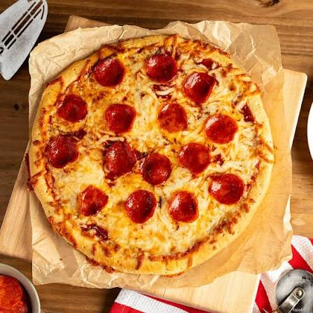

This homemade pepperoni pizza features a golden, lightly crisp crust topped with a rich tomato sauce, melted mozzarella cheese, and slices of savory pepperoni that become slightly crisp around the edges as they bake. The combination of gooey cheese, tangy sauce, and flavorful pepperoni makes it a timeless favorite that's perfect for family dinners, game nights, or casual gatherings.
The recipe is simple enough for beginners while delivering pizzeria-style results at home. Using fresh ingredients and baking the pizza at a high temperature creates a beautifully browned crust with bubbling cheese and perfectly cooked toppings. Serve it fresh from the oven with a sprinkle of Italian herbs, grated Parmesan, or red pepper flakes for an extra burst of flavor.
In a bowl, combine the warm water, sugar, and yeast. Let it sit for 5–10 minutes until foamy. Add the flour, salt, and olive oil, then mix until a dough forms. Knead for 8–10 minutes until smooth and elastic.
Place the dough in a lightly oiled bowl, cover it, and let it rise in a warm place for about 1 hour, or until doubled in size.
Preheat your oven to 475°F (245°C). If using a pizza stone, place it in the oven while it preheats.
Punch down the dough and roll or stretch it into a 12-inch circle. Transfer it to a pizza pan or parchment-lined baking tray.
Spread the pizza sauce evenly over the dough, leaving a small border around the edge. Sprinkle the mozzarella cheese evenly on top, then arrange the pepperoni slices over the cheese. Add Parmesan and Italian seasoning if desired.
Bake for 12–15 minutes, or until the crust is golden brown and the cheese is melted, bubbly, and lightly browned.
Remove the pizza from the oven and let it cool for 2–3 minutes. Slice and serve with optional red pepper flakes or fresh basil.